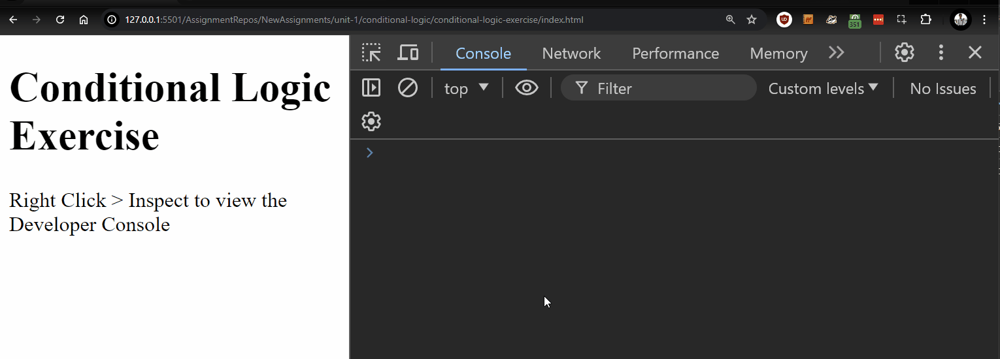
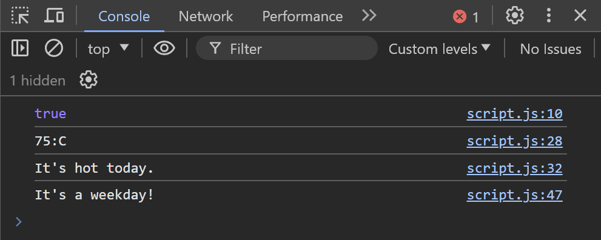

Conditional Logic
Objectives
-
Use a conditional statement to make decisions based on data
-
Use a prompt to collect input from a user
-
Write a simple program that accepts user input and provides a response based on the user's input
-
Utilize AND (&&), OR (||), and NOT(!) Logical Operators
-
Describe what is meant by a "code block"
Key Terms
prompt()
a built-in function that asks the user to enter some text.
let answer = prompt("What is your favorite color?");
if...else statement
a conditional statement to help you make decisions in code. It lets you run one code block if an if condition is true, or another code block if the if condition is false
if condition
an expression that evaluates to truthy or falsy, used to determine if a code block will be executed afterwards or not.
if( skyColor === "blue")
code block
code between a { and }. One place where these are used are after an if condition, where a code block is executed if the preceding condition was truthy.
if( skyColor === "blue") {
console.log("no rain today");
}
&& (AND) logical operator
performs an AND operation between two boolean expressions and returns either true or false
|| (OR) logical operator
performs an OR operation between two boolean expressions and returns either true or false
! (NOT) logical operator
performs a NOT operation on a boolean expression and inverts it
Conditional Logic Assignment
Make sure to go through the guide to starting an assignment before continuing. There will be a folder called "examples" where you can try out the example code below.
Conditionals Background
Most programs are designed to perform different actions based on data.
These "conditional" actions can be defined by if...else statements.
The general format of these statements look like this:
if ( FIRST CONDITION ) {
FIRST CODE BLOCK
} else if ( SECOND CONDITION ) {
SECOND CODE BLOCK
} else {
DEFAULT CODE BLOCK IF ALL ABOVE CONDITIONS ARE FALSE
}
Each if or else if expression is made up of 2 parts:
-
The if condition: The condition will contain a value or expression that evaluates to a boolean value. Often times, this will contain comparison or equality operators.
-
The code block: Each if condition is associated with a code block, enclosed by curly braces
{}.
IMPORTANT: only one condition in an if...else block will be executed when your program runs. Even if multiple conditions are true, only the FIRST condition that returns true will execute its associated code block.
ALSO IMPORTANT: notice that the else section is different because it doesn't include an associated condition. This is because the else clause acts like a "catch-all" so that when none of the conditions are true, the else code block will be executed.
Let's take a look at an example. This code snippet will make one of 3 animal sounds based on the animal variable:
let animal = "cat";
if (animal === "dog"){
console.log("WOOF!");
}
else if (animal === "cat"){
console.log("MEOW!");
}
else {
console.log("...oink?");
}
Since we set the animal variable to "cat" this time, we're going to only see "MEOW!" on the console.
If we had set the animal variable to "frog", there's no condition that matches "frog", so the else clause would execute as the "catch-all" or default, and we'd see "...oink?" logged to the console.
Conditional Logic Exercise
-
Open
index.htmlin Live Server and read the HTML code. Open up the Developer Console. Openscript.jsin VS Code. -
Declare a variable
ageand assign the number value representing your age to the variable. -
Below the
agevariable you declared, declare a variableisAdult, and do not assign to it any value. -
Below the
isAdultvariable declaration, use anifandelsestatement to check ifageis less than18. If the parameterageis less than18, assign the boolean valuefalsetoisAdult, otherwise assign the valuetruetoisAdult. -
Directly after the
if...elsestatement, log the value ofisAdultand check the console to see the value you returned from the function. -
Declare a new variable named
score, and assign to it a value between1and105. -
Below the
scorevariable you declared, declare a variablegrade, and assign the valuenullto it. -
Using
ifandelse, conduct the following checks onscore:- if
scoreis less than60, assign the string"F"toscore. - if
scoreis less than70, assign the string"D"toscore. - if
scoreis less than80, assign the string"C"toscore. - if
scoreis less than90, assign the string"B"toscore. - if
scoreis less than100, assign the string"A"toscore. - Otherwise, assign the string
"A++"toscore.
- if
-
Directly after the above
if...elsestatement, logscoreandgradeto the console in this format: "[score] : [grade]". For example:75:C
Logical Operators and Prompts Background
Prompts
Prompts are a way that we can receive answers or input from the user. This is important when we want our program to react to a user's actions.
Sometimes, we will want to ask for input from the user instead of hard-coding data into our programs.
To get input from the user, we can use the prompt() function. The prompt() function takes a question in the form of a string, which we provide between the parentheses (), just like the console.log() function.
Generally, we want to capture the user's response to a prompt, and we can do this by assigning the prompt call to a variable like this:
let answer = prompt("Hi. What is your name?");
console.log("Hello " + answer + "!");
If the user responds with "Bill", then our console would log "Hello Bill!" in this case.
Note: Prompts will ALWAYS return a string value for the user's answer, so sometimes if you want a number value, you would need to call
parseIntto convert the string to a number.
Combining this with what we know about conditional logic, we can now execute different code based on a user's input:
// Prompt the user to enter their age
let age = prompt("Please enter your age:");
// Convert the input to a number
age = parseInt(age);
// Check the age and log the appropriate message
if (age >= 65) {
console.log("You are a senior.");
} else if (age >= 18) {
console.log("You are an adult.");
} else {
console.log("You are a minor.");
}
In the above example, we store the user's response in age, and then convert age to a number using parseInt with the next code statement.
Then, based on the age of the user, we print whether they are a senior, adult, or minor.
Note: Notice how we convert
ageto a number type usingparseIntin this example, sinceprompt()will by default return a string type.Note: Try running this code and inputting 70 to the prompt. What do you see in the console? Although the number
70is both greater than or equal to65and greater than or equal to18, you only see"You are a senior."in the output because only the FIRST true condition executes it's code block.
Now, let's move on to logical operators.
Often times in our code, we will want to take an action based on more than one boolean condition. We can accomplish this by using Logical Operators.
AND Operator
For example, we can guess what type of animal we've encountered based on a combination of how many feet it stands on AND whether or not it can jump high. The logical AND (&&) operator can help us here.
Let's start by asking the user a question and storing their response.
let twoFeetAnswer = prompt("Does this animal usually stand on two feet? Enter true or false");
let standsOnTwoFeet = (twoFeetAnswer === "true");
standsOnTwoFeet will be a boolean with the value of true if the user's string response was "true" and false otherwise.
Now, let's add a second question.
let twoFeetAnswer = prompt("Does this animal usually stand on two feet? Enter true or false");
let standsOnTwoFeet = (twoFeetAnswer === "true");
let jumpAnswer = prompt("Can this animal jump high? Enter true of false");
let canItJumpHigh = (jumpAnswer === "true");
After the user responds to these prompts, we'll have two boolean values.
If we use the && operator on these two values, we'll get a boolean result. The table below diagrams all the possibilities, as well as the what the result of performing a logical AND would give us.
| standsOnTwoFeet | canItJumpHigh | standsOnTwoFeet && canItJumpHigh |
|---|---|---|
true |
true |
true |
true |
false |
false |
false |
true |
false |
false |
false |
false |
As we can see in the table, we will only get a value of true for standsOnTwoFeet && canItJumpHigh if both of these variable are true.
Knowing this, let's extend our code a bit.
let twoFeetAnswer = prompt("Does this animal usually stand on two feet? Enter true or false");
let standsOnTwoFeet = (twoFeetAnswer === "true");
let jumpAnswer = prompt("Can this animal jump high? Enter true of false");
let canItJumpHigh = (jumpAnswer === "true");
if (standsOnTwoFeet && canItJumpHigh){
console.log("This might be a KANGAROO!");
} else {
console.log("This is definitely not a kangaroo.");
}
Using conditional logic, we're able to make an educated guess! But, what if we wanted to make this a bit more sophisticated?
NOT Operator
The NOT operator takes the form of ! in code, and it works slightly different than the AND operator, because it's used on only a single value at a time.
For example, if we wanted to only concern ourselves with animals that do NOT stand on two feet, we could make another boolean value like this:
let doesNotStandOnTwoFeet = !standsOnTwoFeet;
Here is a table that shows possibilities of what doesNotStandOnTwoFeet will be, based on what standsOnTwoFeet is to start with.
| standsOnTwoFeet | !standsOnTwoFeet |
|---|---|
true |
false |
false |
true |
The NOT operator just "flips" the boolean value to the opposite of what it was before.
So, here's a version of our program that is now a bit more sophisticated:
let twoFeetAnswer = prompt("Does this animal usually stand on two feet? Enter true or false");
let standsOnTwoFeet = (twoFeetAnswer === "true");
let jumpAnswer = prompt("Can this animal jump high? Enter true of false");
let canItJumpHigh = (jumpAnswer === "true");
let doesNotStandOnTwoFeet = !standsOnTwoFeet;
if (standsOnTwoFeet && canItJumpHigh) {
console.log("This might be a KANGAROO!");
} else if (doesNotStandOnTwoFeet && canItJumpHigh) {
console.log("This might be a FROG!");
} else {
console.log("This is definitely not a frog or a kangaroo.");
}
OR Operator
The third and final logical operator we'll cover is the logical OR operator. Like the AND operatir, it requires two values, and it gives us a true value if at least one of the input values is true.
The OR operator takes the form of || in our code.
Let's imagine we wanted to write a slightly different program that would tell us whether or not an animal could jump high, based on the name of the animal:
let animal = prompt("What is the name of your animal?");
let isKangaroo = (animal === "kangaroo");
let isFrog = (animal === "frog");
if (isKangaroo || isFrog){
console.log("Your animal can definitely jump high!");
} else {
console.log("I am not sure if this animal can jump high or not.");
}
Here is a table showing all of the possibilities:
| isKangaroo | isFrog | isKangaroo OR isFrog |
|---|---|---|
| true | true | true |
| true | false | true |
| false | true | true |
| false | false | false |
As you can see, we'll get a value of true for isKangaroo || isFrog as long as at least one of the input values is true.
Truth Table
The rules for these 3 boolean operators are often described in a standard Truth Table. In this table, simply consider p and q to be two boolean values.
| p | q | !p | p OR q | p AND q |
|---|---|---|---|---|
true |
true |
false |
true |
true |
true |
false |
false |
true |
false |
false |
true |
true |
true |
false |
false |
false |
true |
false |
false |
Complete the Logical Operators and Prompts Exercise before moving forward.
Logical Operators and Prompts Exercise
-
Make sure that
index.htmlis still opened with Live Server and openscript.jsin VS Code if it isn't already. -
Use
prompt()to ask the user"What season is it currently?"and capture the answer in a newly declared variable namedcurrentSeason. -
Using
ifandelse, conduct the following checks oncurrentSeason:- if
currentSeasonis equal to"summer", log"It's hot today."to the console. - if
currentSeasonis equal to"spring", log"The flowers are blooming."to the console. - if
currentSeasonis equal to"fall", log"The leaves are changing colors."to the console. - if
currentSeasonis equal to"winter", log"It's cold today"to the console. - Otherwise, log
"Please enter a valid season next time."to the console.
- if
-
Save your code and refresh your browser. You should see a prompt asking you what the current season is. Answer the prompt, and check the console to see if the correct message was logged.
-
Use
prompt()to ask the user"What day of the week is it?"and capture the answer in a newly declared variable nameddayOfTheWeek.Hint: If the first prompt that asks you about the season keeps coming up, consider commenting it out until you complete the rest of the exercise.
-
Using
if...elsestatement and logical operators, check to see ifdayOfTheWeekis equal to"saturday"OR equal to"sunday".- if
dayOfTheWeekis equal to"saturday"OR"sunday", log"Have a good weekend!"to the console - otherwise, log
"It's a weekday!"to the console.
- if
-
Save your code and refresh your browser, and answer the two prompts with a valid season and day of the week, respectively.

-
Take a screenshot of the console output. It should look something like this:

Submitting
Complete the questions in quiz.md if you haven't already.
Please follow the instructions in submitting an exercise to submit your assignment solution.